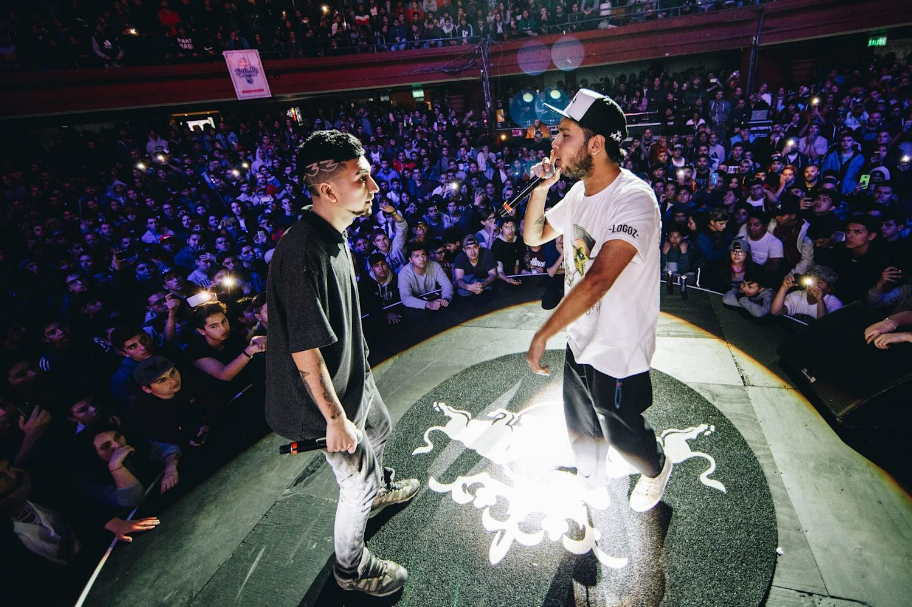

IMPROVISACIÓ
Crear rimes al moment sense tenir cap lletra preparada.
L'art de fer història
sense tenir un guió.
Batalles, grans competicions i els MCs que han marcat una generació. Descobreix el món de la improvisació.
Rimes espontànies, ritme i respostes que només poden existir en aquell instant.
El freestyle és una disciplina del rap basada en la improvisació. Els MCs creen versos al moment i demostren creativitat, agilitat mental i capacitat d'adaptar-se a cada situació.
En les batalles, dos o més participants s'enfronten amb paraules. El públic i els jutges valoren el flow, l'enginy, les rimes i la posada en escena.

EL FREESTYLE EN DIRECTE ↗ 01 / 03Una batalla va molt més enllà de rimar. És un xoc de creativitat, tècnica i presència.
Crear rimes al moment sense tenir cap lletra preparada.
Adaptar les paraules i les pauses al ritme de la música.
Trobar la resposta inesperada i convertir-la en una rima.
Transmetre energia i connectar amb el rival i el públic.